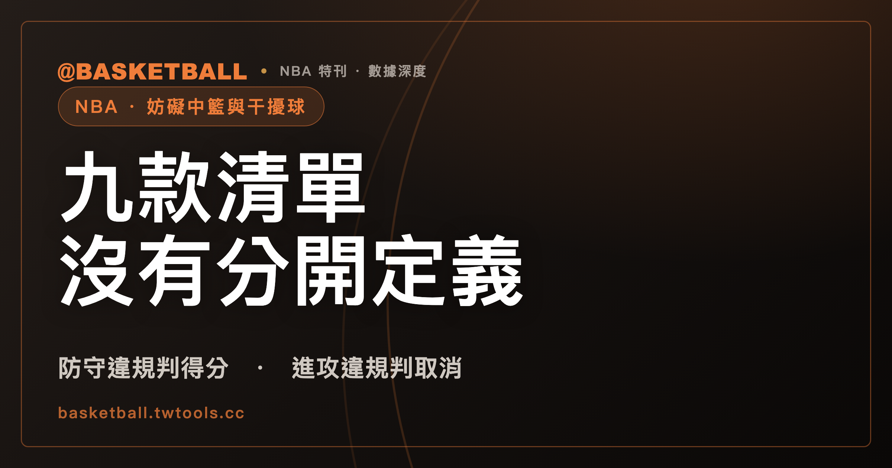

那球到底吹哪一種？NBA 規則書把「妨礙中籃」和「干擾球」寫進同一份清單裡
一次觸球，可能被吹掉，也可能直接算進——差別藏在球是不是還在下降飛行、有沒有機會進框，以及違規發生在哪一邊籃框。NBA 2025-26 官方規則書把這兩種情況寫進同一份九款列舉，沒有像 FIBA 規則書那樣把兩者拆成兩段各自編號；這篇文章照規則書原文拆開這九款，也用 FIBA 2024 年版規則做對照。

新手村｜規則入門・妨礙中籃與干擾球
球員的手一碰到下降中的球，裁判的哨聲可能取消得分，也可能反而讓對手直接得分。球迷平常會用「妨礙中籃」（goaltending）跟「干擾球」（basket interference）這兩個詞區分兩種情況，但依 NBA 2025-26 官方規則書 Rule 11（BASKET INTERFERENCE—GOALTENDING），這兩個詞其實不是規則書條文本身的分類標籤——這是一份合併列舉的九款清單。這類判罰在規則書裡用的字是「違規」（violation），一般的違例和犯規怎麼分，可參考本站的NBA 防守三秒列在違例章，罰則卻是技術犯規：違例和犯規差在哪，這裡不重複展開。
規則書用一份九款清單，同時涵蓋兩種情況，沒有另外貼標籤
依 NBA 2025-26 官方規則書 Rule 11, Section I，開頭只寫一句「A Player Shall Not：」（球員不得），接著列出 a 到 i 九款，規範球員不能做的事。這九款合在同一段裡，規則書沒有在任何一款前面加註「本款屬於妨礙中籃」或「本款屬於干擾球」，段落末尾的罰則（PENALTY）段也只統稱「the violation」，沒有分別點名兩種違例名稱。
九款當中，至少四款（b、c、f、g）明確以「球在假想圓柱體內」「球在下降飛行中且有機會進框」為觸球違規的核心條件：觸碰在假想圓柱體內、位於籃框上方的球（Section I(b)）；投籃嘗試中觸碰下降飛行且仍有機會進框的球（Section I(f)）；球碰過籃板環線以上部位後，不論上升或下降，觸碰仍有機會進框的球（Section I(c)）；用穿過籃框的手觸球（Section I(g)）。另外幾款（a、e、h、i）則圍繞「球已經在籃框上或籃網中」這個情境：球坐著或滾動在籃框上、把籃框當支撐時觸碰，或球通過籃框時掛在籃框上（Section I(a)）；把投出後的球困在籃板面上（Section I(e)）；讓籃框、籃網或籃板震動，造成球不自然彈跳或籃框偏離中心位置（Section I(h)）；球還在籃網中、尚未完全清出籃框時觸碰籃框、籃網或球（Section I(i)）。
球迷慣稱的「妨礙中籃」大致對應第一組情境，「干擾球」大致對應第二組情境，但這是轉播與媒體的中文慣稱，NBA 規則書條文本身沒有寫這兩個中文詞，也沒有在九款裡標出哪幾款屬於哪一種。這兩個英文詞要到 Rule 11 之外的章節才被規則書當成可以分開指涉的違例名稱，下面會說明。
「還在下降」加「有機會進框」，兩個條件要同時成立
依 NBA 2025-26 官方規則書 Rule 11, Section I(f)：投籃嘗試中，觸碰「下降飛行中、仍有機會進框」的球屬違規，規則書把這個情境本身視為一次投籃出手（field goal attempt）。這一款寫得很明確：球在下降本身不夠，還要同時符合「有機會進框」；有機會進框本身也不夠，還要同時符合「下降飛行中」。
FIBA Official Basketball Rules 2024 Article 31.2.1 有另一版本的下降飛行觸球條件：球「完全高於籃框水平面」，且處於下降飛行、或已經碰過籃板。FIBA 這一條同樣要求下降飛行，但條文裡沒有出現「進框機會」這個字樣的獨立條件。這代表「下降飛行中觸球」是兩份規則書共有的判準方向，但「進框機會」這一項附加條件，目前只在 NBA 2025-26 官方規則書找到明文——FIBA 的版本不能拿來當作「NBA 這兩個條件必須同時成立」這件事的另一重驗證，只能佐證判斷方向大致相同。
假設情境（僅供練習，非真實案例）：一名球員在對手出手後，伸手把已經完全靜止、正躺在籃框上的球撥開——這球沒有處於下降飛行，落入的不是 Section I(f)，而是球坐在籃框上把籃框當支撐這一款（Section I(a)）。同一個「手碰到球」的動作，球的狀態不同，對應的款次就不同，這也是為什麼讀這條規則要先確認球當下的狀態，不能只看有沒有手碰到球。
誰得分、球權給誰，看違規發生在哪一邊籃框
依 NBA 2025-26 官方規則書 Rule 11, Section I 的 PENALTY 段：違規發生在對方籃框，判給對方得分（出手在兩分區給兩分、三分區給三分）；違規發生在自己籃框，不得分，球權判給對方，球放在罰球線延長線邊線。這段文字本身沒有寫「防守方」「進攻方」這兩個詞，用的是「違規發生在哪一邊籃框」來描述。實務上球員一般只會在對方籃框做出讓對方得分的觸球動作（防守方妨礙中籃），在自己籃框做出取消己方得分的觸球動作（進攻方干擾球），所以規則書用籃框位置描述的這條罰則，等於「防守方違規換來對方得分、進攻方違規換來取消得分」。
FIBA Official Basketball Rules 2024 Article 31.3.1 與 31.3.2 把方向寫得更直接：進攻球員違規，不得分；防守球員違規，依出手位置判給進攻方得分（兩分區給兩分，罰球情境給一分）。FIBA 版本直接用「offensive player」「defensive player」這兩個身分詞，可以當作 NBA 用籃框位置描述那條罰則的交叉對照——兩份規則書的方向一致，只是描述方式不同。
「妨礙中籃」「干擾球」兩個詞，規則書留到 Rule 6 與 Rule 13 才用
Rule 11, Section I 本文九款雖然沒有分開貼標籤，NBA 2025-26 官方規則書的其他章節卻反覆使用這兩個詞。Rule 6（出界罰則清單）Section I(e)(10) 把「Offensive basket interference」列為單獨一種違例，球判給對方在邊線罰球線延長線處；Section I(f)(3) 把「Defensive goaltending」列為單獨一種違例，球判給對方在底線最近處。Rule 13（即時重播）Section I(a)(12) 規定，裁判對「goaltending 或 basket interference 是否吹判正確」不確定時，於第四節或延長賽最後兩分鐘會觸發錄影重播；Section II(l) 接著寫，重播中心官員審查依據要回到「Rule 11, Section I」。
也就是說，這兩個英文詞在規則書裡確實存在，只是它們住在 Rule 11 之外——Rule 6 和 Rule 13 把它們當成可以分別指涉的違例名稱來使用，判定依據回頭仍是同一條 Rule 11。場上要不要重看這球，除了即時重播的觸發條件，球隊在賽事進行中也可能發動教練挑戰，可審查的判決類別可參考本站的教練喊挑戰之前，得先叫一次暫停：NBA 教練挑戰只能挑三種判決，這裡不重複展開。
FIBA 把妨礙中籃與干擾球分開編號，還多一條 NBA 沒有的技術犯規
FIBA Official Basketball Rules 2024 的 Article 31，標題就是「Goaltending and Interference」，結構上把兩者拆成獨立編號的小節：31.2.1 到 31.2.3 定義 Goaltending，31.2.4 定義 Interference。這與 NBA Rule 11 Section I 用同一份九款合併列舉的寫法不同。
罰則部分，FIBA 的版本也比 NBA 更細。依 Article 31.3.3：防守方違規若發生在「最後一罰」，除了判給進攻方一分，還要額外對防守球員記一次技術犯規。NBA 2025-26 官方規則書 Rule 11 文本中，沒有找到對應的「最後一罰額外技術犯規」條款。
| 比較項目 | NBA 2025-26 官方規則書 | FIBA 2024 年版規則 |
|---|---|---|
| 條文結構 | Rule 11 Section I 九款合併列舉（a–i），本文未分類標籤 | Article 31.2.1–31.2.3（Goaltending）與 31.2.4（Interference）分開編號 |
| 觸球條件 | 下降飛行中且有機會進框（Section I(f)） | 完全高於籃框水平面，且下降飛行或已觸籃板（31.2.1）；未見「進框機會」字樣 |
| 罰則方向 | 依違規發生在哪一邊籃框描述（PENALTY 段） | 直接寫明「offensive player」「defensive player」（31.3.1、31.3.2） |
| 最後一罰額外條款 | 規則書文本中未找到對應條款 | 防守方違規，額外記一次技術犯規（31.3.3） |
灌籃時手碰到籃框、灌完之後抓著籃框：規則書管的是兩件事
「灌籃時手會碰到籃框，算不算違規？」這是常見的疑問。NBA 2025-26 官方規則書沒有一句話直接寫「灌籃合法」，只能從 Section I(a) 與 Section I(h) 反向推論：手碰到籃框本身，只要球不是「坐著或滾動在籃框上、把籃框當支撐」，也沒有讓籃框產生不自然震動或偏離中心位置，文本上就不落入 (a) 到 (i) 任何一款。這是反推出來的結論，規則書沒有一句話直接回答，只能從其他款反推，行文到這裡保留這層不確定。
灌籃之後故意抓著籃框，是另外一件事。依 NBA 2025-26 官方規則書 Rule 12A（技術犯規）Section IV(a)：進攻球員故意掛在自己的籃框、籃網、籃板或支架上，判一次「非不運動精神」（non-unsportsmanlike）技術犯規。這是 Rule 12A 的條款，不是 Rule 11 的妨礙中籃或干擾球，兩者判準和罰則都不一樣——碰籃框當下是不是違反 Rule 11，要看球當時的狀態；灌籃完之後要不要因為抓著籃框吃技術犯規，是另一條規則管的事。
自己判一次（以下情境僅供練習，非真實案例）：①球員出手投籃後，球還在下降飛行、有機會進框，防守球員伸手把球撥掉——對應 Section I(f)。②球員灌籃出手時手碰到籃框，球沒有停在籃框上、籃框也沒有不自然震動——依 (a)(h) 反推，文本上不落入這九款。③球員灌籃得分後，故意抓著籃框不放——對應 Rule 12A Section IV(a) 的技術犯規，不是 Rule 11。三種情境對到三條不一樣的款次或規則，差別在球當下的狀態，以及動作發生在投籃過程中還是投籃結束之後。
常見問題
NBA 規則書真的沒有把「妨礙中籃」和「干擾球」分開定義嗎？
依 NBA 2025-26 官方規則書 Rule 11, Section I 的本文九款（a–i），確實沒有在任何一款前面標示屬於哪一種違例，罰則段也只統稱「the violation」。但「Offensive basket interference」「Defensive goaltending」這兩個詞，在同一份規則書的 Rule 6（出界罰則）與 Rule 13（即時重播）裡有被使用，只是不在 Rule 11 本文。這個結論僅限於 Rule 11 Section I 本文九款有沒有逐款貼標籤，不代表 NBA 規則書整體完全不區分兩者。
判「妨礙中籃」的兩個條件，NBA 跟 FIBA 一樣嗎？
依 NBA 2025-26 官方規則書 Rule 11, Section I(f)，要同時符合「下降飛行中」與「有機會進框」兩個條件。FIBA 2024 年版規則 Article 31.2.1 也要求下降飛行（或已觸籃板），但條文中沒有出現「進框機會」這個獨立字樣。兩份規則書都要求下降飛行，「進框機會」目前只在 NBA 版本找到明文，不宜說成兩份規則書的條件完全相同。
這球算誰得分、球權給誰？
依 NBA 2025-26 官方規則書 Rule 11, Section I 的 PENALTY 段，違規發生在對方籃框，判給對方得分（兩分區兩分、三分區三分）；發生在自己籃框，不得分，球權判給對方。FIBA 2024 年版規則 Article 31.3.1、31.3.2 把身分寫得更直接：進攻方違規不得分，防守方違規依出手位置判給進攻方得分。
灌籃完抓著籃框會被吹嗎？
會，但吹的不是妨礙中籃或干擾球。依 NBA 2025-26 官方規則書 Rule 12A, Section IV(a)，進攻球員故意掛在自己的籃框上，判一次「非不運動精神」技術犯規，這是另一條規則，判準和 Rule 11 的九款不同。
資料來源
- NBA 2025-26 官方比賽規則書（NBA Official Playing Rules，2025-26 賽季版本）：Rule No. 11（BASKET INTERFERENCE—GOALTENDING，Section I）、Rule No. 6（PUTTING BALL IN PLAY—LIVE/DEAD BALL，Section I(e)(10)、(f)(3)）、Rule No. 12（FOULS AND PENALTIES，A. Technical Foul，Section IV(a)）、Rule No. 13（INSTANT REPLAY，Section I(a)(12)、Section II(l)）。本文引用內容取自該文件的本機文字檔快照，2026-09-28 23:14 取得，無可直接點擊的官方網址可附。
- FIBA Official Basketball Rules 2024（Valid as of 1st October 2024，v1.0a）：Article 31（Goaltending and Interference，31.2.1–31.2.4、31.3.1–31.3.3）。本文引用內容取自該文件的本機文字檔快照，2026-09-28 23:14 取得，無可直接點擊的官方網址可附。